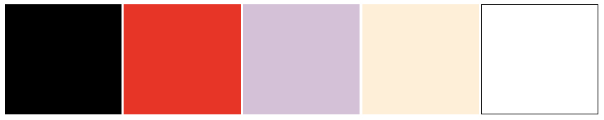

Buttons
I dette framewrok kan du lave knapper ved at tilføje classen btns, som illustreret i følgende eksempel ved en knap.
<a href=""
class="btns">Knaptekst</a>
LightBox
Man kan anvende denne funktion, LightBox, til billedmateriale.

Typografi
Der er udelukkende anvendt fonten Libre Baskerville, serif.
Det typografiske hieraki ses herunder.
Fonten Baskerville, H1
Fonten Baskerville, H2
Fonten Baskerville, H3
Fonten Baskerville, H4
Fonten Baskerville, Brødtekst
Farver
Anvendte farver: 